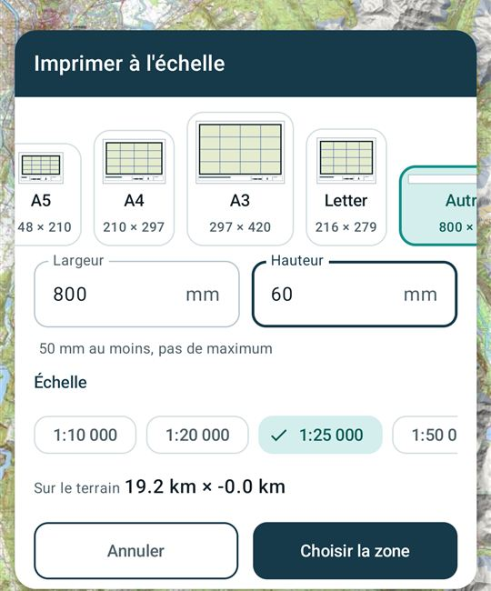
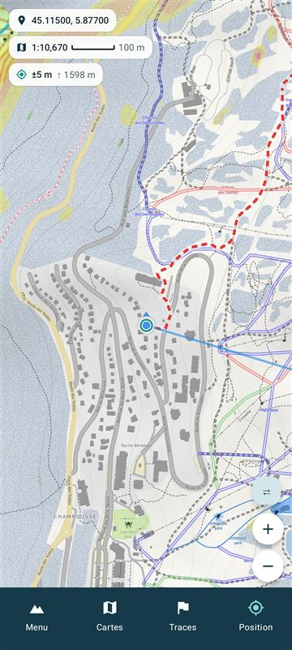
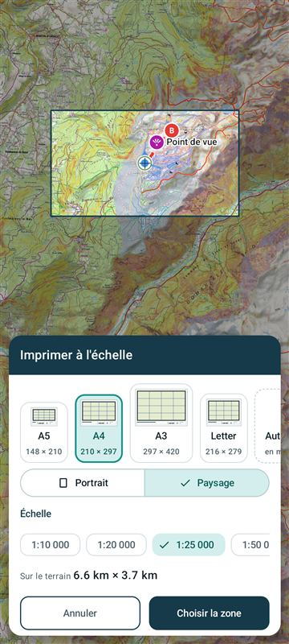
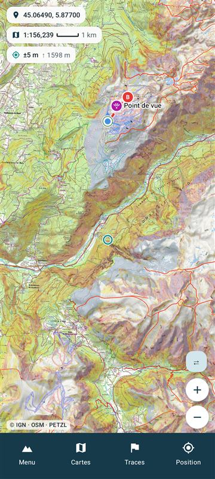

Impression : une feuille sans place pour la carte, et la carte après « Annuler »
Deux écarts relevés sur l'émulateur le 2026-11-02 (0.4.145, release android-0.4.145). Rien n'est codé : choisissez une lettre pour chaque partie.
1. « Sur le terrain » quand la feuille ne laisse pas de place (Autre, 800 × 60 mm, 1:25 000)
À 800 mm de large, le bandeau du bas prend 28,6 mm et les bords 2 × 16,6 mm : la carte n'a plus de hauteur (−1,8 mm). Aujourd'hui le panneau écrit « −0.0 km » sans rien dire, et c'est l'écran suivant qui refuse (« Le format de page ou les marges ne laissent pas de place à la carte. »). Il faut au moins 82 mm de hauteur pour une carte de 20 mm.

2. La carte après « Annuler » sur le choix de la feuille
Depuis la variante E (P17.8), le panneau du format recadre la carte pour montrer le cadre au-dessus de lui. « Annuler » ne la remet pas en place : la carte reste là où le cadre l'a mise. Sur l'émulateur, chaque ouverture puis « Annuler » la déplace de 5,6 km vers le sud et change le zoom.

45.11500, 5.87700 · 1:10 670

cadre A4 paysage au 1:25 000

45.06490, 5.87700 · 1:156 239
- P1« Annuler » remet la carte où elle était avant « Imprimer » (centre, zoom, orientation), au choix de la feuille comme sur le cadre. Après un PDF créé, la carte reste sur la zone imprimée.
- P2Toute fermeture remet la carte : « Annuler », ✕, retour arrière, et aussi « Fermer » après le PDF.
- P3Rien ne change : la carte reste où le cadre l'a mise.